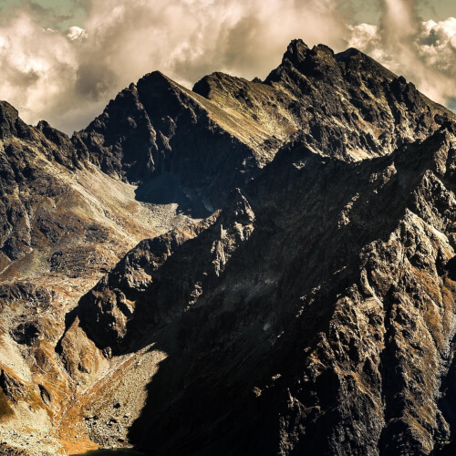
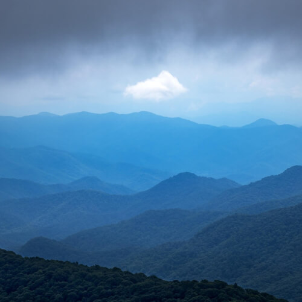
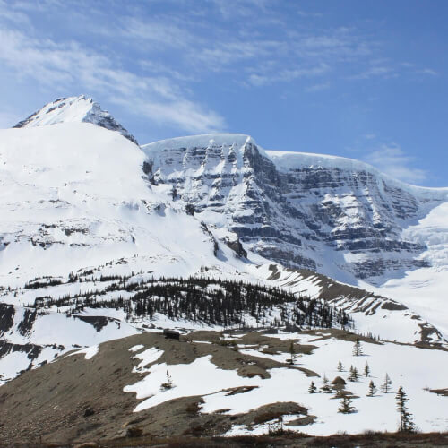
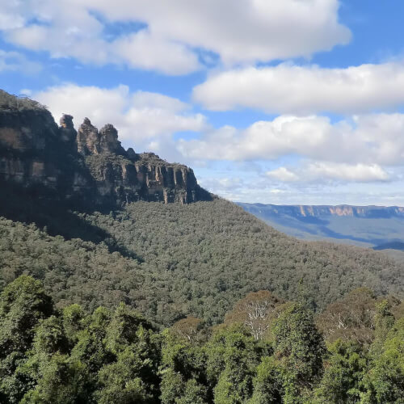
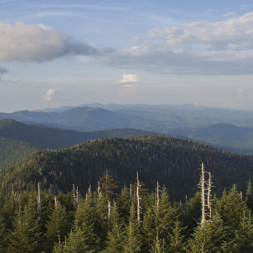
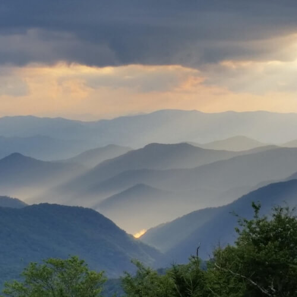
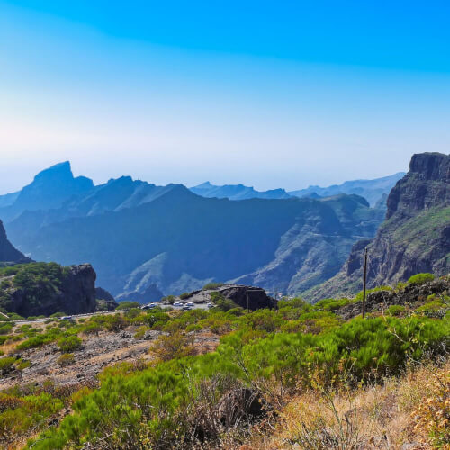
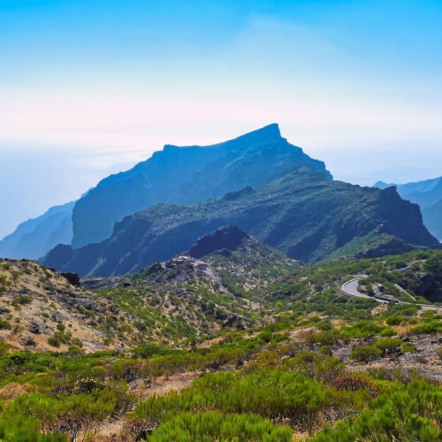
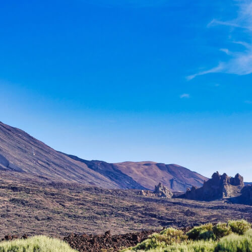
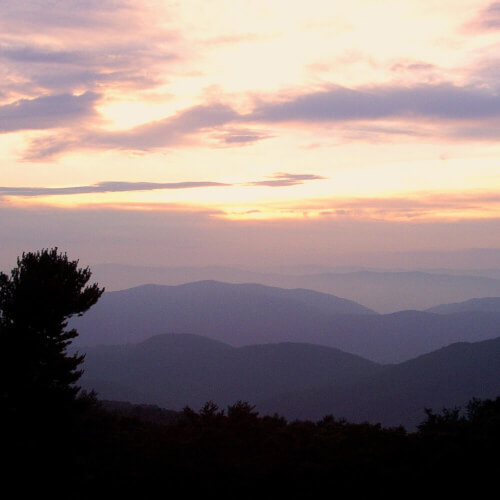

Szczyty skalnych gór oświetlone promieniami słońca

Góry we mgle

Śnieżyste góry

Zalesione góry

Górski krajobraz leśny

Góry w promieniach słońca

Skaliste góry

Górski krajobraz z drogą

Górski krajobraz pustynny

Górski krajobraz w delikatnym świetle